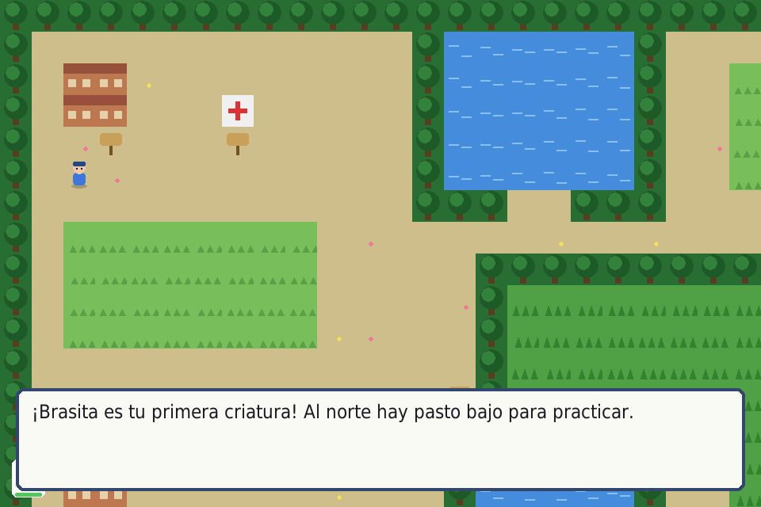

- 12 criaturas de 6 tipos (Fuego, Agua, Planta, Eléctrico, Roca, Fantasma) con tabla de tipos: unos pegan fuerte a otros.
- Evolucionan al nivel 16. Captúralas en el pasto con esferas; equipo de 6, las demás van a la caja.
- Mochila con pociones y centro de curación en el mapa.
- 3 entrenadores y el Campeón Orión al final.
- Guarda con F5 y carga con F9. Sonidos hechos con números.
Necesita: Python 3 + pygame · Linux, Windows y Mac
⬇ Descargar .zip (37 KB) 🎮 Jugar en el navegador▶️ Cómo jugar
- Descarga y descomprime el zip.
- Instala pygame:
pip install pygame - Corre
python3 criaturas.py(en Windows:python criaturas.py; en Linux/Mac también sirve./jugar.sh).
🎮 Controles
| Flechas | moverte / elegir en los menús |
| ENTER | aceptar |
| ESC | cancelar |
| M | menú |
| SHIFT izq. | correr |
| F5 / F9 | guardar / cargar |
⌨️ Cambiar los controles
Abre controles.txt (está junto a criaturas.py) y cambia la tecla después del =. Así viene de fábrica:
izquierda = left derecha = right arriba = up abajo = down aceptar = return cancelar = escape correr = left shift menu = m guardar = f5 cargar = f9
Nombres válidos: letras (a, b...), flechas (up, down, left, right), space, return, tab, left shift, left ctrl y números. Si escribes una tecla que no existe, el juego avisa y usa la de siempre.
✏️ Haz tu propio nivel
Los niveles están en mapa.txt (la leyenda está arriba del archivo). Son dibujos de texto: cada letra es un cuadrito.
# | árbol (no se pasa) |
~ | agua (no se pasa) |
H | casa (no se pasa) |
. | camino |
+ | centro de curación |
L | letrero (choca para leer) |
, | pasto bajo (criaturas nivel 3-6) |
; | pasto medio (8-12) |
" | pasto alto (13-18) |
P | donde empiezas |
1 2 3 | entrenadores |
K | el campeón |
Edita el dibujo, guarda, y corre: python3 criaturas.py
- Puedes mover a los entrenadores y al campeón a donde quieras.
- Las criaturas, sus ataques y los equipos de los entrenadores están en
datos.py; el dibujo de cada una es una función endibujos.py.
🔧 Para cambiar cómo se siente
Arriba de criaturas.py: TILE, PASO_SEG, PASO_CORRER, VEL_TEXTO. En logica.py están las fórmulas de daño, captura y experiencia.